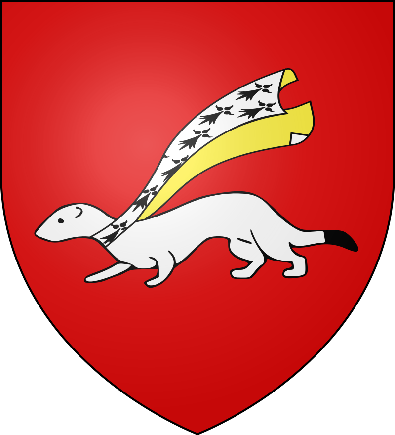
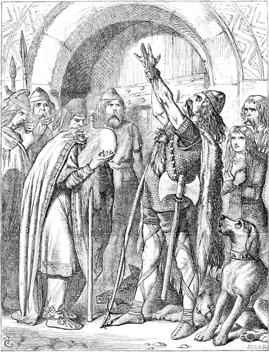
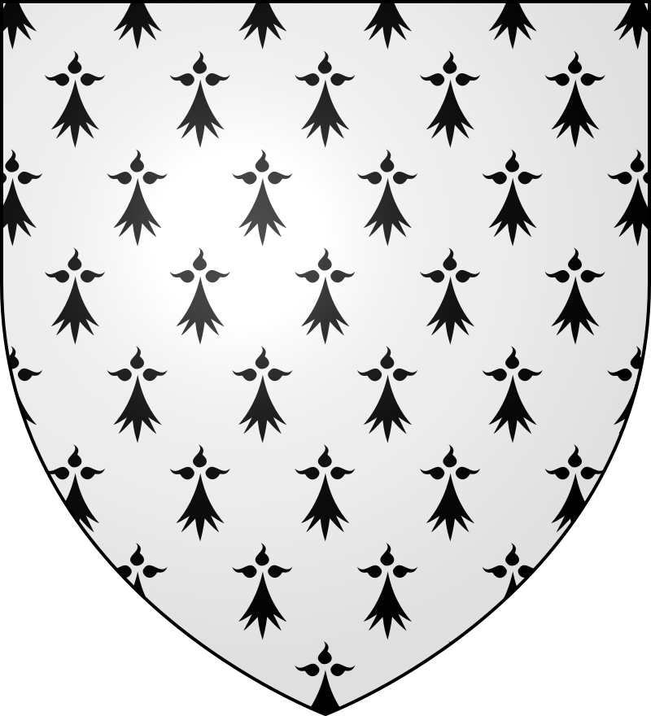
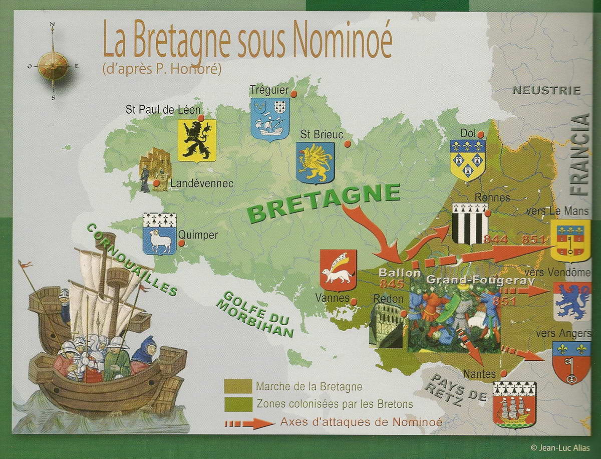
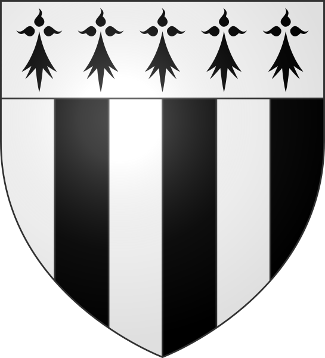
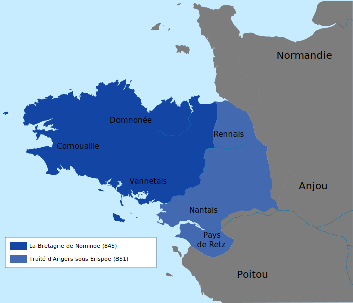
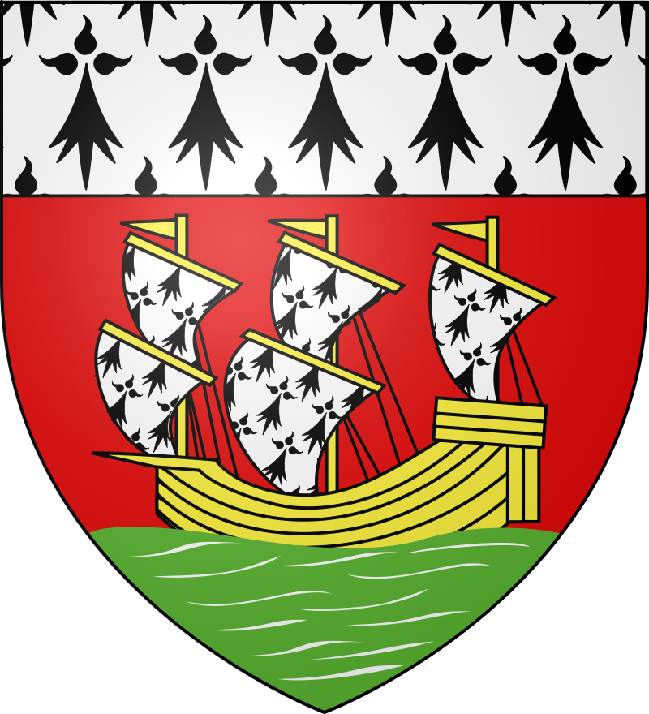

Nominoë (Nevenoe) est considéré comme le premier Roi de Bretagne, bien qu'il n'ait jamais porté le titre de Roi. Il est comte de Vannes à partir de juillet 819 jusqu'à sa mort le 7 mars 851, et souverain de Bretagne dès 845. Il est le créateur d'une Bretagne Unifiée et Indépendante. Il est surnommé le Père de la Patrie, Tad ar Vro. Il est fondateur de ce qui sera appelé plus tard Royaume de Bretagne. Il meurt lors d'une expédition dans le Vendôme après avoir conquis la Maine et l'Anjou. Il est inhumé à Redon.
|  |
 |
 |
| Blason Vannetais |
Nominoë |
Blason Breton |
Nominoë a toujours eu la motivation de créer une Bretagne souveraine, voyant que le pouvoir en Bretagne était désorganisé, il arrive à convaincre le Pape de lui donner l'autorisation de se faire sacrer souverain des Bretons à Dol-de-Bretagne par l'archevêque de Dol. Nominoë désormais à la tête de la Bretagne, il la réforme en modifiant les evêchés de Bretagne, appelés aussi Pays Bretons. Aux anciens Pays Bretons installés à Quimper (Pays de Cornouaille), Vannes (Pays Vannetais), Dol-de-Bretagne (Pays de Dol) et Saint-Pol-de-Léon (Pays de Léon), s'ajoutent alors Aleth (Quartier de St Malo, Pays de Saint-Malo), Tréguier (Pays de Trégor) et Saint-Brieuc (Pays de Saint-Brieuc).
 |
 |
 |
| Blason de Quimper-Cornouaille |
La Bretagne sous Nominoë |
Blason Dolois |
Une fois les 7 évêchés créés, il entre en guerre en 849 contre Charles le Chauve, roi des Francs, et démarre les marches de Bretagne, pour récupérer ce qui deviendra ensuite les deux derniers pays bretons, le Pays Rennais et le Pays Nantais. Vers le 15 août 850, l'armée bretonne s'empare de Rennes et Nantes. La souveraineté bretonne sera reconnue plus tard suite aux victoires militaires bretonnes de Nominoë puis d'Erispoë, son fils, qui terminera ce que son père a commencé, et deviendra le premier Roi de Bretagne.
|  |
 |
 |
| Blason Rennais |
Carte de la Bretagne sous Nominoë |
Blason Nantais |
 ●
845-851
●
845-851